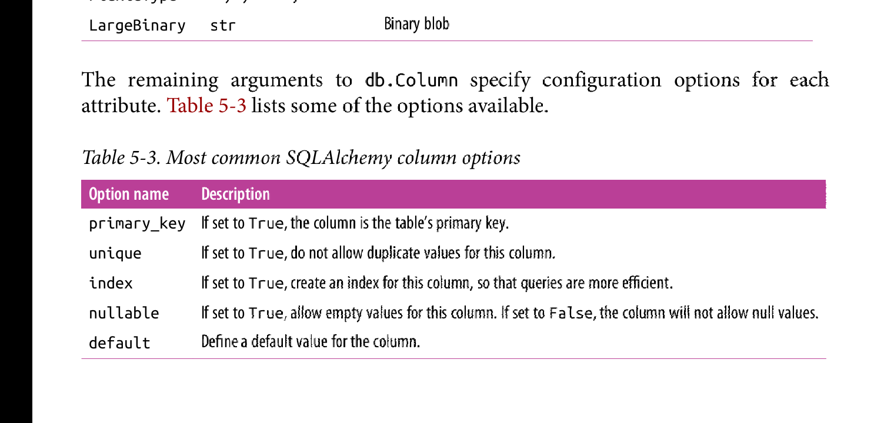
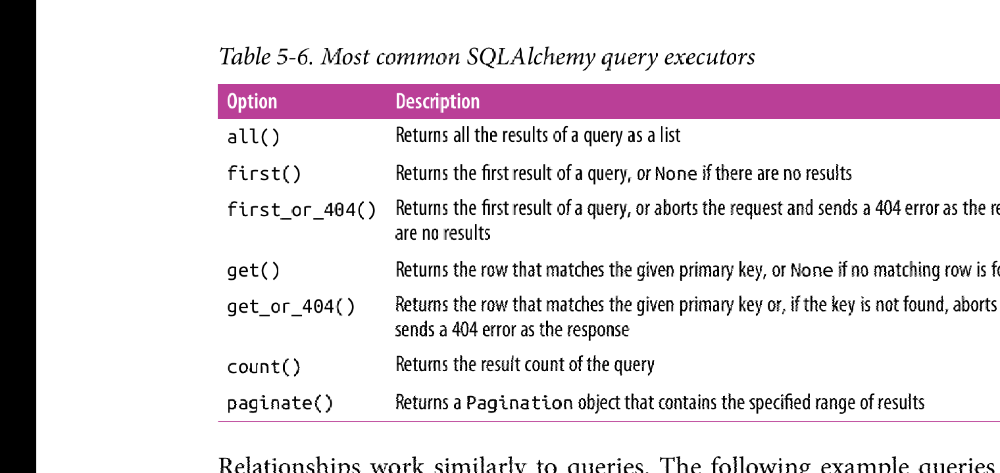

简介
数据库用于以有组织的方式存储应用程序数据，当程序需要数据时，会执行查询命令来获取部分数据。
当前比较流行的有两种数据库: SQL database 和 NoSQL database.
SQL Databases
关系数据库使用table来存储数据。table对应用程序领域的不同实体进行建模。例如，菜单管理应用程序的数据可能拥有customers, products, 和 orders table.
table拥有固定数量的columns和可变的rows.columns定义由table表示的实体的数据属性。比如，一个customers table可能定义了如下columns: name, address, phone等等。每一个row定义了一条数据记录，数据记录可能只对某些columns或全部columns赋值。
table有一个特殊的columns，叫做primary key,它是一个用于区别其他row的标识。table也可以拥有foreign keys columns,所谓的外键引用了same table 或者 other table的某一row的主键值。这种外键与主键的链接叫做关系，是关系型数据库的基础。

在上述图片中，user table中的role_id称作外键。链接roles.id和users.role_id的线表示两张表之间的关系。在直线两端的数字表示关系的对应基数。在roles.id这端，表示该关系下只能存在一个roles.id,在uers.role_id这端表示可以存在多个role_id实体。也就是所谓的一对多关系，表明在roles table中的每一天记录可以与users表中的多行记录关联。
关系数据库存储数据高效，并能避免数据重复。这里在数据库里修改user role是很简单的，因为角色名字只存在唯一的地方: roles表。一旦roles表中的角色名改变，所有先前引用当前被修改的role name 的用户会看到更新后的角色名。
从另一方面说，将数据分割，分别存储在多个tables中，这增加复杂性。生成一个带有角色名的用户列表会存在一点问题，因为用户数据和角色数据需要分别从两张table中读取，然后将这些数据组合后才能一起显示。关系型数据库提供了对tables的join操作。
NoSQL Database
一切不遵循关系模型的数据库一律统一称作NoSQL Database.一种通用的NoSQL database 组织是，使用collections代替tables, documents 代替records.NoSQL database本身设计使得join操作很难实现，因此大多数的它们根本不支持join操作。对于之前的关系型数据库组织的图表可知，其需要应用程序自己去执行join操作，流程是从每一个用户中读取role_id字段的值，然后利用这个值在roles表中搜索相应的角色名。
一个更加合适的NoSQL database设计如下:
这是执行denormalization操作的结果，这种操作以昂贵的数据重复为代价来节省table的数量。
这种结构的数据库将角色名显示地存储在每一个用户里。因此，修改角色名将需要修改大量的用户中的角色。
但这并不糟糕，因为重复数据使得查询更快。这直接列出用户和角色，而不需要额外的join操作。
Sql or NoSQL?
关系型数据库以高效且紧密的方式存储结构化数据，在这方面它更加出色。关系型数据库极力维持数据一致性，即使面对重大错误以及硬件故障。之所以关系型数据库有如此高的可靠性，是因为它遵循ACID原则: Atomicity(原子性)，Consistency(一致性)，Isolation(隔离性)， Durability(持久性)。nosql 放松了部分ACID原则，因此有时候将获取更高效的性能。
对于中小型应用程序，两种数据库都适合，且拥有相同的性能。
Python Database Fraworks
python包含支持各种开源或商用数据库引擎的库，而flask不限制使用何种数据库引擎库，因此你可以选择任何你喜欢的数据库引擎库。
如果数据库引擎库不能满足你的要求，你也可以使用数据库抽象层库，比如SQLAlchemy或者MongoDB, 等等，这些数据库抽象层允许你在一个更高的层次使用python对象工作，而不是使用数据库尸体，比如table, documents, 或者查询语言。
选择数据库框架可以参看如下原则:
How to choose database fraworks
Ease of use
比较数据库引擎库和数据库抽象层库，后者更加合适。abstraction layers也叫做对象关系映射表(object-relational mappers)或者对象文档映射表(object-document mappers),它提供了一个透明的转化，这种转化将高层面向对象操作转换成底层的数据库命令。
Performance
由ORMs或者ODMs做出的将对象领域转换成数据库领域的这种转换有一个性能消耗。大多数情况下，这种性能损失可以忽略不计，但也只是对于大多数情况。通常由ORMs或者ODMs让产品获得的利润要远比损耗的些许性能更重要。因此，完全的弃用ORMs或者ODMs是不明智的。有意义的是使用这样一种数据库抽象层，在需要执行一些需要优化的特定操作时，可以可选的通过直接编写原始的数据库命令来达到优化操作的目的。
Portability
必须考虑在软件测试版本与发布版本上使用的数据库的兼容性，以及ORMs或者ODMs在可以使用的底层数据库引擎数量和一致的使用面向对象接口来访问数据库。
Flask integration
尽管选择一个flask集成的数据库框架并不是必须的，但是flask数据库框架可以简化数据库配置和操作。出于这个目的，本章将使用flask-SQLAlchemy集成，它是SQLAlchemy框架的简单包装。Database Management with Flask-SQLAlchemy
Flask-SQLAlchemy是flask扩展，它简化了SQLAlchemy在程序中的使用。SQLAlchemy是一个强大的关系数据库框架，它提供了对多个类型的后端数据库的支持，，以及高层的ORMs和对数据库使用查询语言的底层访问。
在Flask-SQLAlchemy中，一个数据库由URL指定。以下是三种最流行数据库引擎的URL格式:
上述的url中，hostname可以是localhost或者远程服务器的ip地址, database表明要使用的数据库的名字。对于sqlite来说，其无需服务器，因此server,hostname, 以及password可以省略，database是在磁盘中数据库的名字。
程序的数据库的url必须定义在app.config对象里作为键SQLALCHEMY_DATABASE_URI的值，其次最好将SQLALCHEMY_TRACK_MODIFICATIONS的值设置为False,这可以有效减少内存的使用，除非你有跟踪对象改变的需要。以下是初始化和配置SQLite数据库的代码:
# SQLite database configuration import os from flask_sqlalchemy import SQLAlchemy basedir = os.path.abspath(os.path.dirname(__file__)) app = Flask(__name__) app.config['SQLALCHEMY_DATABASE_URI = 'sqlite:///' + os.paht.join(basedir, 'data.sqlite') app.config['SQLAlCHEMY_TRACK_MODIFICATIONS'] = False db = SQLAlchemy(app)db对象代表数据库，它提供了对所有flask_sqlalchemy功能的访问接口。
Model Definition
程序使用术语model来引用持久化的数据库实体。在ORMs环境下，model表示一个python 类，该类的属性与相应的数据库表的字段相匹配。
db对象提供了用于定义model的基本类，以及一系列helper类和函数来定义model的结构。以下是定义model的代码:
#hello.py Role and User model definition class Role(db.Model): __tablename__ = "roles" id = db.Column(db.Integer, primary_key=True) name = db.Column(db.String(64), unique=True) def __repr__(self): return '<Role %r>' % self.name class User(db.Model): __tablename__ = "users" id = db.Column(db.Integer, primary_key=True) username = db.Column(db.String(64), unique=True, index=True) def __repr__(self): return '<User %r>' % self.username
__tablename__变量定义了数据库中表的名字。以下列出了可用的columns类型:
以下是可用的Column类配置参数:

flask_sqlalchemy要求所有的model必须包含一个primary_key类型的column.
Relationships
关系型数据库通过使用关系来声明不同表的行之间的关联。之前关于Role和User表的关系图表表达了它们之间简单的关系。这是roles到users的一对多关系，因为一个角色可以属于多个用户，但是每一个用户只能拥有一个角色。
以下代码表示了model类之间的一对多关系:
#hello.py relationships in the database models
class Role(db.Model):
#...
users = db.relationship('User', backref='role')
class User(db.Model):
#..
role_id = db.Column(db.Integer, db.ForeignKey('roles.id')
通过之前users表和roles表之间的关系图表可知,一个关系是通过使用外键来连接不同表中的row(记录)的。User模型中的role_id字段被定义为外键，这个外键建立了不同表之间的关系。db.ForeignKey()中的roles.id参数指定刚添加到User表中的字段role_id的值来源与roles表中的主键id的值。
被添加到Role表中的users字段代表从面向对象角度上观察的关系的表示，就好像从一对多关系中的‘一’上观察。在给出一个Role类实例的前提下，其users属性将会返回一个包含用户的列表，这些个用户与该role对象相关联(这些用户代表一对多关系中的'多').db.relationship()中的第一个参数代表处于关系的另一端的模型是什么(该模型默认是表示'多’的一端)。该参数可以是该模型类的字符串名字，前提是该模型是在python模块中定义的，而不管两个模型定义的前后关系。也就是说db.relationship()函数在外键定义的关系前提下，默认定义了一种一对多的关系。
db.relationship()中的backref参数定义关系的反转方向，其通过向User模型添加一个role属性来实现。这个属性可以以对象的方式，用在任何User实例上去访问Role模型实例，来取代role_id外键来访问。
上述说明声明的一对多关系两个方向的应用: Role的users属性和User的role属性，其都是建立在User定义的role_id外键所建立的关系的前提上。
大多数情况下，db.relationship()可以自动定位其所需要的关系的外键，但是有时候它不能决定使用什么字段作为外键。比如如果User模型有两个或更多的字段被定义为指向Role的外键，那么sqlalchemy就不能决定去使用哪一个外键。无论何时配置的外键有冲突，那么db.relationship()必须给出额外的参数来解决这种冲突。以下列出了一些可以用来定义关系的通用配置选项:
除了默认的一对多关系以外，还存在其他的关系。一对一关系的定义和一对多关系的定义差不多，只不过在db.relationship()中添加值为False的uselist参数，这样由db.relationship()默认定义的多端，变成了单端。多对一关系的定义除了可以将之前一对多关系中的模型反转一下以外，还可以通过将外键和db.relationship()定义在之前一对多关系中的多端(也就是说在一对多关系中，db.relationship()定义在一端，外键定义在多端，而多对一关系中，db.relationship()和外键都定义在多端)。而最复杂的关系: 多对多关系，需要用到额外的表，叫做association table 或者junction table.
Database Operations
最好的方式来使用这些模型实在python shell里。首先配置FLASK_APP环境变量，然后运行flask shell进入flask相关的python shell.
Creating the Tables
首先需要使用模型类来创建数据库。db.create_all()函数定位所有继承于db.Model类的子类，然后在数据库中创建相应的表。
(venv) $ flask shell >>> from hello import db >>> db.create_all()
db.create_all()函数在表已经存在于数据库的前提下，其不会重复创建或更新这些数据库表。当需要应用被修改的model时，很不方便。唯一的方法是删除原先的数据库，在重新创建数据库，毫无疑问，数据丢失了。
>>> db.drop_all() >>> db.create_all()
Insert Rows
创建模型实例
>> from hello import Role, User >>> admin_role = Role(name='Admin') >>> mod_role = Role(name='Moderator') >>> user_role = Role(name='User') >>> user_john = User(username='john', role=admin_role) #这里的role由backref参数创建的反向引用，其引用的是模型实例，这里要特别注意。 >>> user_susan = User(username='susan', role=user_role) >>> user_david = User(username='david', role=user_role)上述对象只存在与shell环境下，因此其主键还没有被数据库自动赋值。
加入事务:
>>> db.session.add(admin_role) >>> db.session.add(mod_role) >>> db.session.add(user_role) >>> db.session.add(user_john) >>> db.session.add(user_susan) >>> db.session.add(user_david)或使用更简洁的方式:
>>> db.session.add_all([admin_role, mod_role, user_role, user_john, user_susan, user_david])
事务提交: 将改变写入数据库:
>>> db.session.commit()
事务使得数据库数据保持一致性。事务中的对象会被自动写入数据库。当在事务提交期间出现任何错误，则整个事务会被丢弃，这不会因为只更新部分改变而导致数据库数据不完整。
事务支持回滚操作。
Modify Rows
>>> admin_role.name = "Administrator" >>> db.session.add(admin_role) >>> db.session.commit()
Deleting Rows
>>> db.session.delete(mod_role) #注意，他这里不是db.delete(), 而是db.session.delete() >>> db.session.commit()
Querying Rows
每一个model类中都包含一个用于查询的query对象。
>>> Role.query.all() [<Role 'Administrator'>, <Role 'User'>] >>> User.query.all() [<User 'john'>, <User 'susan'>, <User 'david' >]结果过滤
>>> User.query.filter_by(role=user_role).all() [<User 'susan'>, <User 'david'>]
检查query对象的底层 sql语言实现
>>> str(User.query.filter_by(role=user_role)) 'SELECT users.id AS user_id, users.username AS users_name, users.role_id AS users_role_id \nFROM users \nWHERE :param_1 = users.role_id'
如果退出shell,那么之前创建的所有对象将不会再以python 对象的形式存在，而是以rows(记录)的形式继续存在于相应的数据库中。当你创建一个新的shell时，你必须从数据库中的row中重新创建相应的模型实例。
user_role = Role.query.filter_by(name='User').first() #这里是从数据库中导出相应数据对象，而一开始时，是从头开始自己创建空的类实例。 #而且查询结果返回的是对象，而不是像sql查询语言那样单纯返回字段。
filter_by()过滤器可以以方法链的形式在query对象上多次调用，直到得到满意的结果。以下是常用的过滤器:
当所有所需的过滤器应用到query对象中后，执行all()会使得query运行，返回结果为一个列表，除了all()还有其他方法可以触发query的运行。以下是query执行方法:

关系的工作原理类似于查询，以下代码查询在roles和users之间双向的一对多关系:
>>> users = user_role.users >>> users [<User 'susan'>, <User 'david'>] >>> users[0].role <Role 'User'>
user_role.users查询有点小问题存在。当user_role.users表达式被求值时，一个隐式的查询在内部调用all()方法，结果是返回一个包含用户的列表。因为query对象被隐藏，所以不可能使用方法链的形式对结果进行进一步使用多个过滤器精炼。举个例子，比如说想返回一个依据字母顺序来排序的用户列表。以下代码重新配置关系，使得查询不会被自动执行。
class Role(db.Model):
#...
users = db.relationship('User', backref='role', lazy='dynamic')
以这种方式配置的关系，user_role.users返回的query对象还没有被执行，因此可以使用它通过过滤器方法链对其进一步精炼。
>>> user_role.users.order_by(User.username).all() #依据字母顺序对查询结果进行排序 [<User 'david'>,<User 'susan'>] >>> user_role.users.count() 2